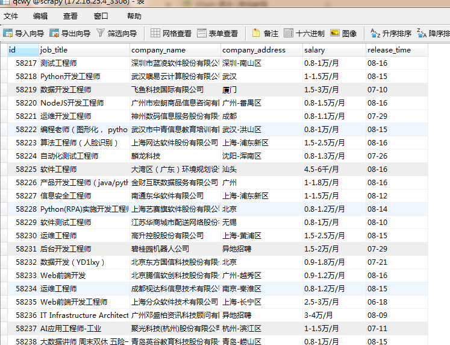

本文获取的字段有为职位名称，公司名称，公司地点，薪资，发布时间
创建爬虫项目
scrapy startproject qianchengwuyou
cd qianchengwuyou
scrapy genspider -t crawl qcwy www.xxx.comitems中定义爬取的字段
import scrapy
class QianchengwuyouItem(scrapy.Item):
# define the fields for your item here like:
job_title = scrapy.Field()
company_name = scrapy.Field()
company_address = scrapy.Field()
salary = scrapy.Field()
release_time = scrapy.Field()qcwy.py文件内写主程序
import scrapy
from scrapy.linkextractors import LinkExtractor
from scrapy.spiders import CrawlSpider, Rule
from qianchengwuyou.items import QianchengwuyouItem
class QcwySpider(CrawlSpider):
name = 'qcwy'
# allowed_domains = ['www.xxx.com']
start_urls = ['https://search.51job.com/list/000000,000000,0000,00,9,99,python,2,1.html?']
# https://search.51job.com/list/000000,000000,0000,00,9,99,python,2,7.html?lang=c&postchannel=0000&workyear=99&cotype=99°reefrom=99&jobterm=99&companysize=99&ord_field=0&dibiaoid=0&line=&welfare=
rules = (
Rule(LinkExtractor(allow=r'https://search.51job.com/list/000000,000000,0000,00,9,99,python,2,(\d+).html?'), callback='parse_item', follow=True),
)
def parse_item(self, response):
list_job = response.xpath('//div[@id="resultList"]/div[@class="el"][position()>1]')
for job in list_job:
item = QianchengwuyouItem()
item['job_title'] = job.xpath('./p/span/a/@title').extract_first()
item['company_name'] = job.xpath('./span[1]/a/@title').extract_first()
item['company_address'] = job.xpath('./span[2]/text()').extract_first()
item['salary'] = job.xpath('./span[3]/text()').extract_first()
item['release_time'] = job.xpath('./span[4]/text()').extract_first()
yield itempipelines.py文件中写下载规则
import pymysql
class QianchengwuyouPipeline(object):
conn = None
mycursor = None
def open_spider(self, spider):
print('链接数据库...')
self.conn = pymysql.connect(host='172.16.25.4', user='root', password='root', db='scrapy')
self.mycursor = self.conn.cursor()
def process_item(self, item, spider):
print('正在写数据库...')
job_title = item['job_title']
company_name = item['company_name']
company_address = item['company_address']
salary = item['salary']
release_time = item['release_time']
sql = 'insert into qcwy VALUES (null,"%s","%s","%s","%s","%s")' % (
job_title, company_name, company_address, salary, release_time)
bool = self.mycursor.execute(sql)
self.conn.commit()
return item
def close_spider(self, spider):
print('写入数据库完成...')
self.mycursor.close()
self.conn.close()settings.py文件中打开下载管道和请求头
ITEM_PIPELINES = {
'qianchengwuyou.pipelines.QianchengwuyouPipeline': 300,
}USER_AGENT = 'Mozilla/5.0 (Windows NT 6.1; WOW64) AppleWebKit/534.57.2 (KHTML, like Gecko) Version/5.1.7 Safari/534.57.2'运行爬虫，同时写入.json文件
scrapy crawl qcwy -o qcwy.json --nolog查看数据库是否写入成功，

done.